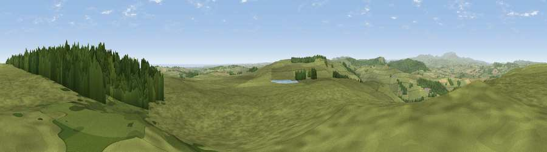

Viewpoint near Bolton
#5307 in England · top 21% of its area beats it · near BoltonThe view, rendered

A 360° render of this exact spot computed from the terrain model, tree cover and land cover — summer colours, afternoon light, calibrated against photographs of famous viewpoints. Real trees, hedges and buildings will differ in detail.
The panorama
Grey silhouette: terrain skyline in each direction (720 bearings, Earth curvature and refraction included). Dashed green: skyline with trees (+15 m) and buildings (+8 m) as obstacles. Blue strip: how far the ground is visible on each bearing.
Where the view opens
Wedge length = distance to the farthest visible ground on that bearing (vegetation-aware). Rings at 10, 25 and 50 km.
What fills the view
76% grassland · 20% woodland · 3% cropland · 1% water
Angular shares of the visible panorama (visual magnitude), not map area. Landscape diversity 0.30 (0–1 Shannon).
Key numbers
More beautiful places nearby
The staircase of upgrades: each row has a higher view potential than everything closer. Driving times are estimates from straight-line distance, calibrated against real road routing — check an actual route before setting out.
| Place | Direction | Drive | Score |
|---|---|---|---|
| Viewpoint near Bolton | NNE · 2 km | ~5 min | 74.7 |
| Cloudy Crags | NNE · 5 km | ~11 min | 80.2 |
| Viewpoint near Whittingham | WSW · 7 km | ~15 min | 80.5 |
| Viewpoint near Glanton | NW · 8 km | ~16 min | 82.9 |
| Viewpoint near Eglingham | NNW · 14 km | ~25 min | 83.8 |
| Viewpoint near Chillingham | NNW · 17 km | ~30 min | 88.1 |
| Viewpoint near Easington | SE · 108 km | ~132 min | 90.2 |
| The Knoll | S · 525 km | ~476 min | 91.0 |
55.37683, -1.79049 · source: screening · position refined by local search. Computed location — check access rights before visiting.